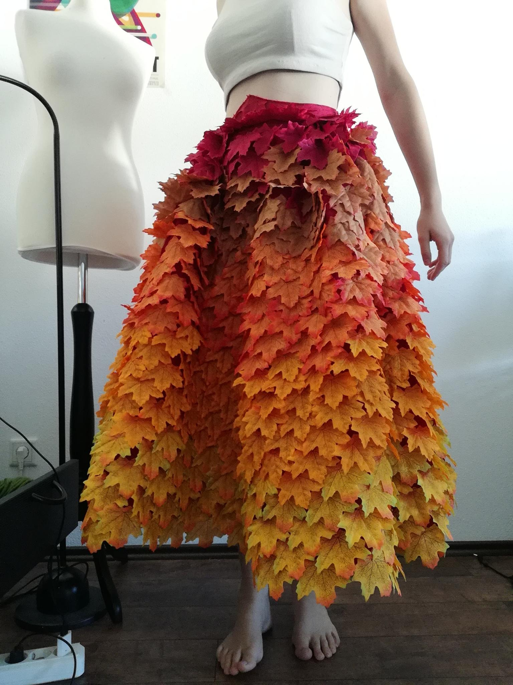
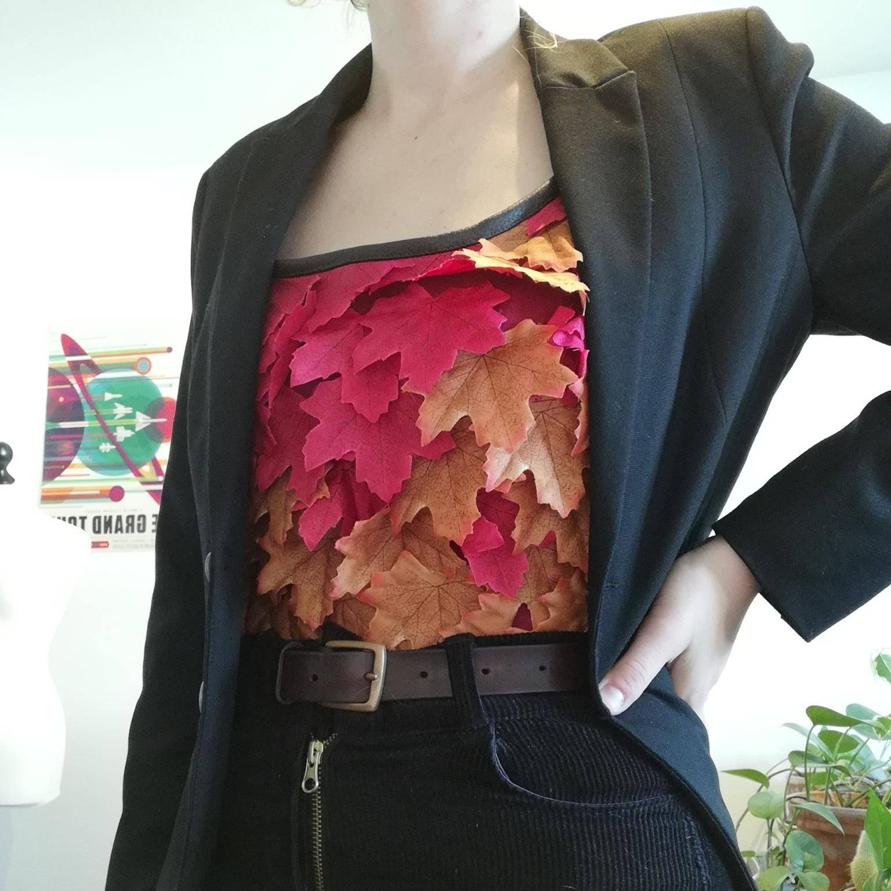
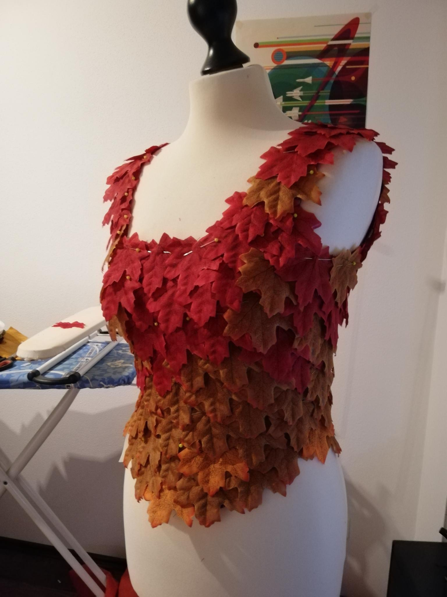
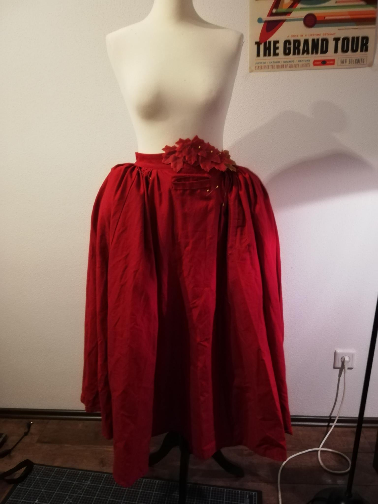
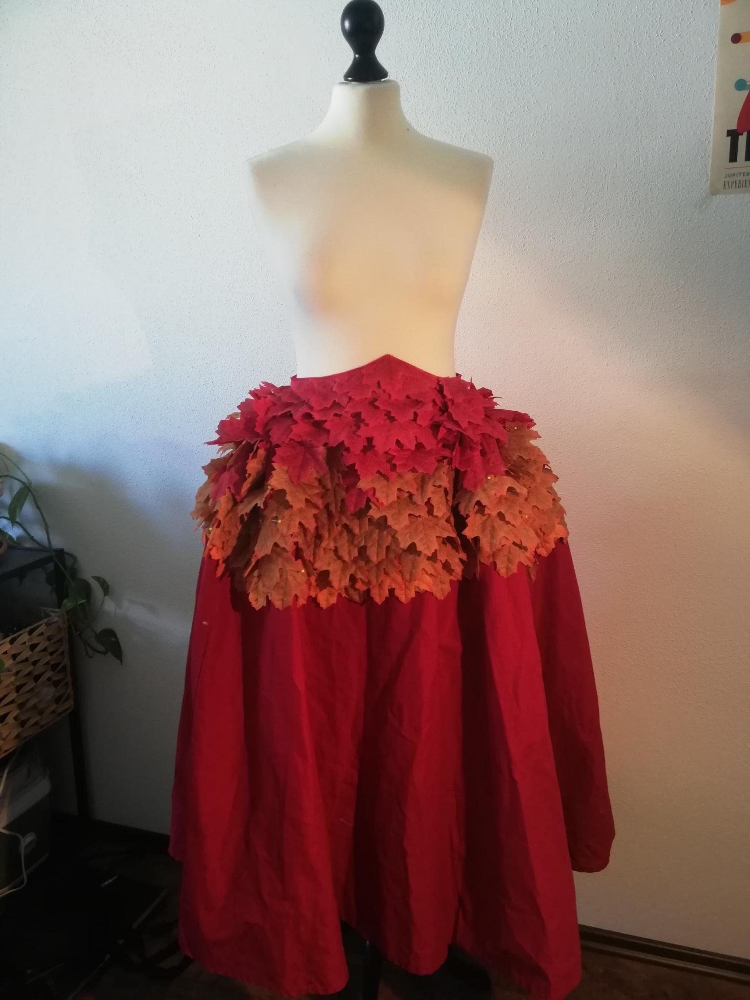
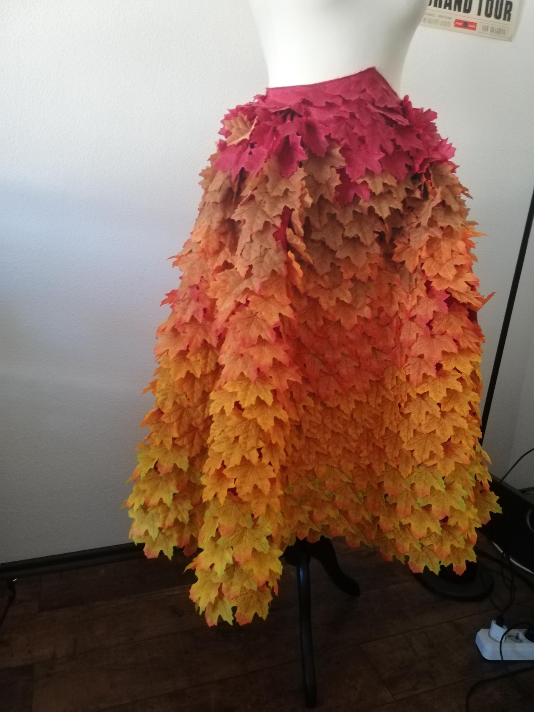
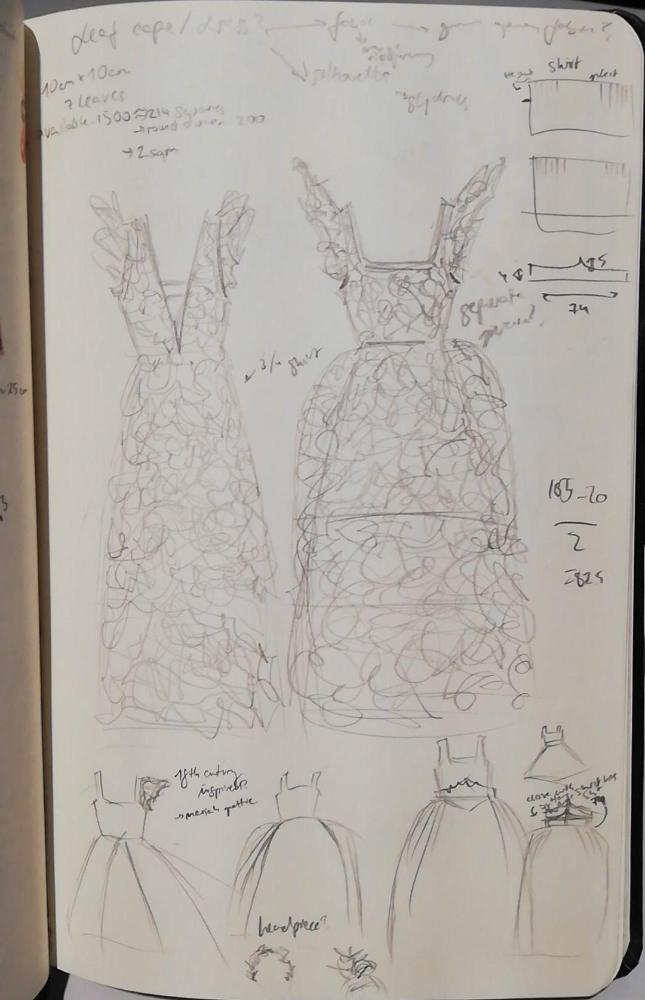

This project might not be entirely practical (though I think "casual business tree" should become a fashion trend) but I had a lot of fun designing and making it! Sewing 1300 leaves to the skirt was surprisingly meditative and only took a few days. I really love the outcome and wearing it is a lot of fun!
For more versatility, I decided to make the dress a two piece set, a historical stays inspired top and a vaguely 18th century silhouette skirt. Inspiration for this project came from Bernadette Banner's leaves cape, PricklyAlpaca's leaves dress and the Critical Role character Keyleth.






